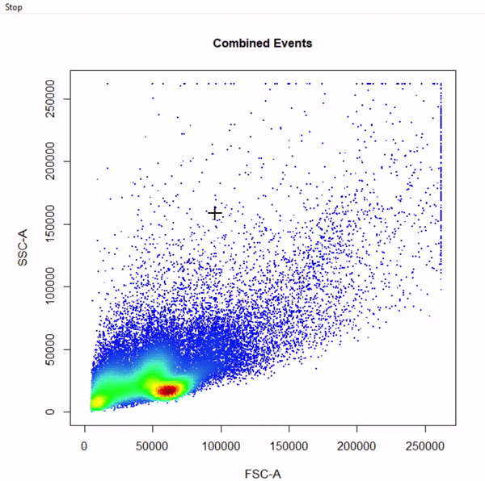
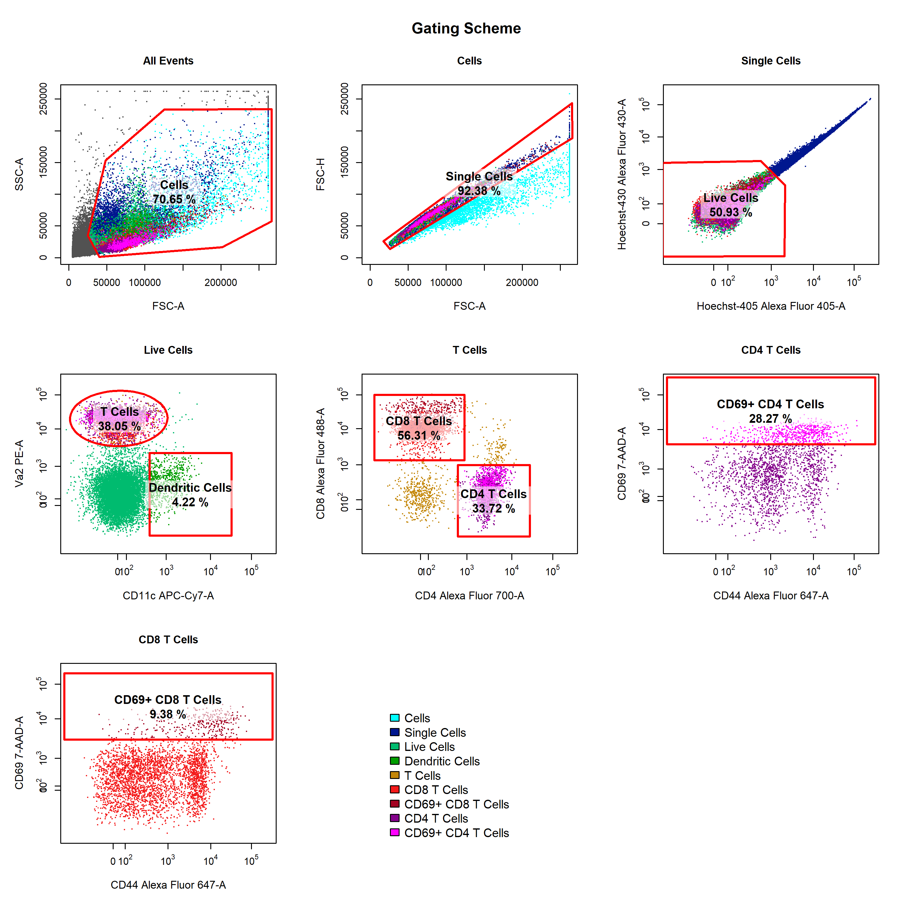

CytoRSuite is designed to provide an interactive interface for the analysis of flow cytometry data in R. If you are new to CytoRSuite visit https://dillonhammill.github.io/CytoRSuite/ to get started.
Installation
CytoRSuite is built on the existing flow cytometry infrastructure for R developed by the RGLab. To install CytoRSuite, users should first install the latest versions of flowCore, flowWorkspace and openCyto from Bioconductor and GitHub.
flowWorkspace - Gating Infrastructure
flowWorkspace requires additional C++ libraries to build from source using Rtools for windows users. Windows and Linux users should follow these instructions before proceeding.
Overview
CytoRSuite provides an interactive interface for analysis of flow cytometry data. Some key features include:
- user guided automatic compensation using
spillover_compute - interactively modify spillover matrices using
spillover_edit - visualise compensation in all channels using
cyto_plot_compensation - easily associate experimental details with each file using
cyto_annotate - manual gate drawing using
gate_draw - ability to edit drawn gates using
gate_edit - remove gates using
gate_remove - gate saving directly to an openCyto
gatingTemplatefor future use - support for using both manual and automated gating approaches through linking to
openCyto - visualisation of flowFrames, flowSets, GatingHierarchies and GatingSets using
cyto_plot - visualisation of complete gating strategies with back-gating and/or gate tracking using
cyto_plot_gating_scheme - visualisation of marker expression profiles in all channels using
cyto_plot_profile - export population level statistics using
cyto_stats_compute
Usage
The full details of how CytoRSuite works will be tackled individually in the package vignettes, but a succinct usage outline is described below:
-
Compensation of fluorescent spillover
1.1 Load compensation controls into a
ncdfFlowSetlibrary(CytoRSuite) library(CytoRSuiteData) # Save .fcs files to folder "Compensation Controls" in working directory files <- list.files(path = "Compensation Controls", full.names = TRUE) fs <- read.ncdfFlowSet(files = files)1.2 Load compensation controls into
GatingSetfor gating1.3 Gate Single Cells using
gate_draw# Gate Cells gate_draw(gs, parent = "root", alias = "Cells", channels = c("FSC-A","SSC-A"), type = "polygon", gatingTemplate = "Compensation-gatingTemplate.csv") # Gate Single Cells gate_draw(gs, parent = "Cells", alias = "Single Cells", channels = c("FSC-A","FSC-H"), type = "polygon", gatingTemplate = "Compensation-gatingTemplate.csv")
1.4 Compute fluorescent spillover matrix using
spillover_compute1.5 Interactively edit computed spillover matrix using
spillover_editspillover_edit(gs, parent = "Single Cells", channel_match = "Compensation-Channels.csv", spillover = "Spillover-Matrix.csv")
-
Analyse samples
2.1 Load samples into a
ncdfFlowSet# Save samples to folder "Samples" in working directory files <- list.files(path = "Samples", full.names = TRUE) fs <- read.ncdfFlowSet(files = files)2.2 Annotate samples with markers using
cyto_markers
2.3 Annotate samples with experimental details using
cyto_annotate
2.4 Add samples to GatingSet
2.4 Apply fluorescent compensation
# Load in spillover matrix spill <- read.csv("Spillover-Matrix.csv", header = TRUE, row.names = 1) colnames(spill) <- rownames(spill) # Apply compensation to samples gs <- compensate(gs, spill)2.5 Transform fluorescent channels for gating
# Fluorescent channels chans <- cyto_fluor_channels(gs) # Logicle transformation trans <- estimateLogicle(gs[[4]], chans) gs <- transform(gs, trans)2.6 Build gating scheme using
gate_draw

- Visualise gating schemes using
cyto_plot_gating_scheme

- Export population-level statistics using
cyto_stats_compute
cyto_stats_compute(gs,
alias = c("CD4 T Cells","CD8 T Cells"),
channels = c("CD44","CD69"),
stat = "median")#> $`CD4 T Cells`
#> OVAConc Alexa Fluor 647-A 7-AAD-A
#> Activation1.fcs 0.000 675.1999 606.7077
#> Activation2.fcs 0.005 720.3611 656.8873
#> Activation3.fcs 0.050 971.4868 744.3725
#> Activation4.fcs 0.500 1503.4010 1233.6546
#>
#> $`CD8 T Cells`
#> OVAConc Alexa Fluor 647-A 7-AAD-A
#> Activation1.fcs 0.000 414.2267 260.0531
#> Activation2.fcs 0.005 410.1949 248.5102
#> Activation3.fcs 0.050 454.0508 312.6521
#> Activation4.fcs 0.500 552.0260 382.5721News
There is a Changelog for the GitHub master branch which will reflect any updates made to improve the stability, usability or plenitude of the package. Users should refer to the Changelog before installing new versions of the package.
Credits
CytoRSuite would not be possible without the existing flow cytometry infrastructure developed by the RGLab. CytoRSuite started out as simple plugin for openCyto to facilitate gate drawing but has evolved into a fully-fledged flow cytometry analysis package thanks to the support and guidance of members of the RGLab. Please take the time to check out their work on GitHub.
Development
CytoRSuite is a maturing package which will continue to be sculpted by the feedback and feature requests of users. The GitHub master branch will always contain the most stable build of the package. New features and updates will be made to a separate branch and merged to the master branch when stable and tested. The Changelog will reflect any changes made to the master branch.
Getting help
The Get Started and Reference sections on the CytoRSuite website are your first port of call if you require any help. For more detailed workflows refer the Articles tab. If you encounter any issues with the functioning of the package refer to these issues to see if the problem has been identified and resolved. Feel free to post new issues on the GitHub page if they have not already been addressed.
Code of conduct
Please note that the CytoRSuite project is released with a Contributor Code of Conduct. By contributing to this project, you agree to abide by its terms.